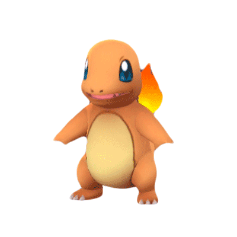

-
Bulbasaur #001

- Grama
- Veneno
Há uma semente de planta em suas costas desde o dia que este Pókemon nasce. A semente cresce lentamente.
-
Ivysaur #002

- Grama
- Veneno
Quando o bulbo em suas costas cresce, parece perder a capacidade de ficar de pé em suas patas traseiras.
-
Venusaur #003

- Grama
- Veneno
Sua planta floresce quando está absorvendo energia solar. Ele permanece em movimento para buscar a luz solar.
-
Charmander #004
- Fogo
Tem preferência por coisas quentes. Quando chove, diz-se que o vapor jorra da ponta de sua cauda.
-
Charmeleon #005

- Fogo
Tem uma natureza bárbara. Na batalha, ele chicoteia sua cauda ardente e corta com garras afiadas.
-
Charizard #006
- Fogo
Ele cospe fogo que é quente o suficiente para derreter pedregulhos. Pode causar incêndios florestais soprando chamas.
-
Squirtle #007

- Água
Quando ele retrai seu longo pescoço em sua concha, ele esguicha água com força vigorosa.
-
Wartortle #008

- Água
É reconhecido como um símbolo de longevidade. Se sua concha tem algas, esse Wartortle é muito antigo.
-
Blastoise #009

- Água
Ele esmaga seu inimigo sob seu corpo pesado para causar desmaios. Em uma pitada, ele se retirará dentro de sua concha.
-
Umbreon #010

- Escuridão
Quando exposto à aura da lua, os anéis em seu corpo brilham fracamente e ela ganha um poder misterioso. Quando a escuridão cai, os anéis em seu corpo começam a brilhar, causando medo nos corações de qualquer pessoa próxima.
-
Lunala #011

- Psíquico
- Fantasma
Existem registros disso em escritos de muito, muito tempo atrás, onde era conhecido pelo nome de “a besta que chama a lua” ás vezes, ele convoca poderes e formas de vida desconhecidos para este mundo, a partir de buracos que levam a outros mundos.
-
Enamorus #012

- Fada
- Voador
Quando ele voa para esta terra vindo do outro lado do mar, o inverno rigoroso chega ao fim. Segundo a lenda, o amor deste Pokémon dá origem ao surgimento de uma nova vida em Hisui.
-
Landorus #013

- Terra
- Voador
A partir das forças dos raios e do vento, cria energia para fornecer nutrientes ao solo e tornar a terra abundante.
-
Tornadus #014

- Voador
Tornadus expele energia massiva de sua cauda, causando fortes tempestades. Seu poder é grande o suficiente para explodir casas.
-
Thundurus #015

- Elétrico
- Voador
Os espinhos em sua cauda disparam imensos raios. Ele voa pela região de Unova disparando raios, ao voar, ele dispara raios para todos os lados e causa incêndios florestais. Portanto, não é apreciado.